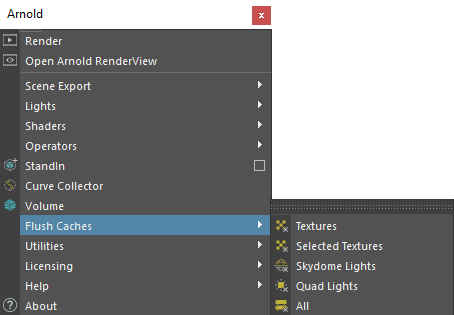
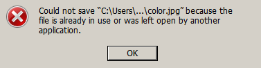
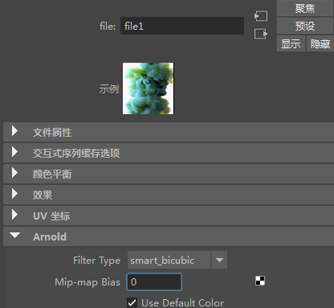
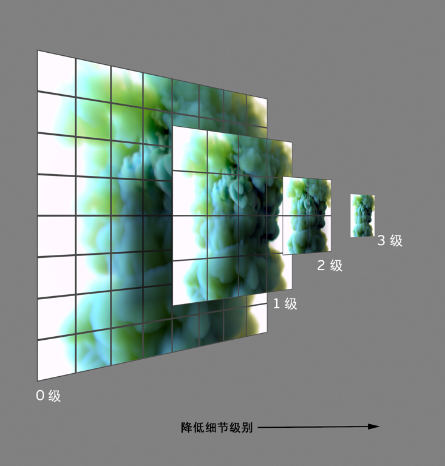
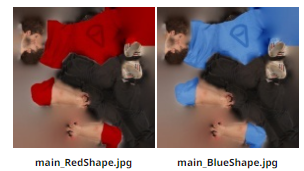
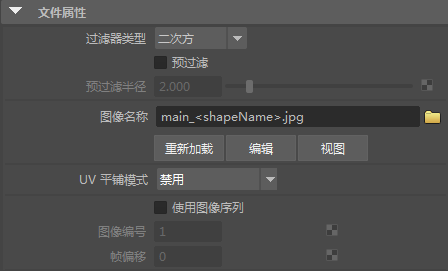
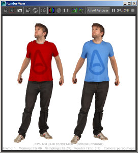

纹理
| 延伸阅读 |
|---|
| 请参见《Arnold 用户手册》中的纹理 |
| 《Arnold for Maya 用户手册》介绍了如何在 Maya 用户界面中使用 Arnold 纹理。《Arnold 用户手册》提供了有关 Arnold 纹理的完整文档。 |
自动生成 TX 纹理(Auto-generate TX Textures)
使用 Arnold 时，建议使用通过 maketx 创建的经过 Mipmap 处理的分片纹理格式，例如 .exr 或 .tx。
- 有关此过程的教程，请单击此处。
默认情况下，系统将为每个图像 着色器自动生成经过 Mipmap 处理的分片 TX 纹理。生成的 TX 将放置在原始纹理文件旁边。当纹理文件名包含 UDIM 等标记时，系统将为每个子分片生成 TX 纹理。
将纹理转化为 TX 可能需要一些时间，特别是对于存储在网络共享中的大型纹理，但通常只有在第一次渲染时才执行此操作。对于后续渲染，如果检测到现有的匹配 TX 纹理，则不会重新生成，除非源纹理内容或颜色空间已更改。另请注意，如果输入纹理文件名的扩展名已经是 .tx，则将保留原样。
禁用自动生成
可以在 Arnold 渲染设置(Render Settings)的纹理(Textures)选项卡中找到禁用自动生成 .tx 纹理的开关，以全局禁用 TX 自动生成。此外，使用 Ai 图像着色器和 Maya 文件节点上的自动生成 TX 纹理(Auto-generate TX Textures)开关，也可针对每个纹理禁用此行为。
线性化
此外，TX 纹理将根据 Maya 的颜色管理(Color Management)设置中的颜色空间规则进行线性化。
如果不使用经过 Mipmap 处理的纹理，则没有纹理过滤。这会导致存在一些差异，特别是对于放射性贴图和置换贴图。
清除缓存

“清除缓存”(Flush Caches)菜单位于应用程序主窗口的 Arnold 菜单栏中
如果默认启用了“自动 Mipmap”(Auto-mipmap)或“自动分片”(Auto-tile)选项，OIIO 会在首次使用纹理的渲染过程中执行纹理预处理。这会将纹理保存在纹理缓存中，后续的渲染将不再需要执行此过程。但此做法的缺点是，在 Windows 中，纹理将在首次渲染后被锁定。
如果需要在渲染期间修改纹理，则可以采取以下操作：
- 使用“清除缓存 -> 纹理”(Flush Caches -> Textures)命令。
- 修改纹理期间，禁用“自动 Mipmap”(Auto-mipmap)和“自动分片”(Auto-tile)选项。使用此选项，每次渲染前将不会执行任何预处理。
渲染开始后，使用的纹理文件会被锁定（即便渲染并非 IPR 会话），无法被其他应用程序（例如 Photoshop）写入。这时通常会显示以下消息：

用户随后必须关闭应用程序并重新打开场景，以便 Arnold 插件接受新保存的纹理文件。解决方法是清除缓存。
- 还必须禁用“自动 TX”(Auto-TX)，否则，将使用 .tx 纹理，并可能会修改原始文件。
- 此问题仅存在于 Windows 平台上。Linux 和 Mac OS 不受影响。
- 要观看演示此工作流的简短视频，请单击此处。
选定纹理(Selected Textures)
仅清除选定纹理。
天穹灯光(Skydome lights)
清除指定给天穹灯光的所有纹理。
四边形灯光(Quad lights)
清除指定给四边形灯光的所有纹理。
全部(All)
清除场景中的所有纹理缓存，包括法线、天穹和四边形灯光纹理。
Maketx
Maketx 是一个将图像转化为经过 Mipmap 处理的分片纹理的命令行工具，类似于 Pixar Renderman 中的 txmake。它是 OpenImageIO (http://www.openimageio.org) 的一部分，由 Sony Pictures Imageworks 公司的 Larry Gritz 开发。
- 有关在使用 .tx 文件时所涉及工作流的教程，请单击此处。
- 如果不使用经过 Mipmap 处理的纹理，则没有纹理过滤。这会导致存在一些差异，特别是对于放射性贴图和置换贴图。
- 请勿将用来推导标量值的纹理线性化，否则会失去精度值。
- maketx 工具位于 MtoA 插件文件夹中。在 Windows 中，为如下位置：
- C:\Program Files\Autodesk\Arnold\maya2020
Mipmap 偏差

Mipmap 偏差会偏移进行纹理采样的 Mipmap 级别。负值表示较大的 Mipmap 级别（纹理更大）；正值表示较小的 Mipmap 级别（纹理更小）。在以下图像的顶部，这一点很明显：

显示 Mipmap 处理的图像
以下示例显示了增加 Mipmap 偏差对渲染的影响：

标记
除了Arnold attr、tile 和 udim 标记，MtoA 还支持 shapeName 和 shapePath 标记。
除了Arnold attr、tile 和 udim 标记，MtoA 还支持 shapeName 和 shapePath 标记。
shapeName
纹理标记
下面是一个示例 shapeName 工作流：
将这两个纹理重命名为：
main_BlueShape.jpgmain_RedShape.jpg

- 将 main_
.jpg 添加到在 Maya 中为两个网格指定的文件纹理的图像名称。

- 将两个网格分别重命名为“Red”和“Blue”之后，即会自动替换纹理。

shapePath
例如，Maya 中名为 | pCube1|pCubeShape1 的节点将在
以后可能会弃用此功能，因为可以改用 attr:name 来获得节点名称。
示例
| 标记 | 纹理名称 | 纹理路径 | 形状名称 | 结果 |
|---|---|---|---|---|
| attr: | moon.tx | <attr:planet default:moon>.tx | ||
| main_RedShape.tx | main_ |
Red | RedShape | |
| texture _u1_v1.tx | texture |
_u1_v1 | ||
| texture_v0001.tx | texture_v0001. |
1001、1002、1003 等 |
- 如果在渲染设置(Render Settings)中启用“绝对纹理路径”(Absolute Texture Paths)，则必须在文本框中输入（或粘贴）完整的绝对路径。如果字符串中包含标记，则 Maya 无法解析该路径，因此它仅存储文本框中的字符串。如果使用文件浏览器并插入标记，则 Maya 仅提供该路径的部分字符串。请观看此示例视频。
- 在渲染设置(Render Settings)中禁用“绝对纹理路径”(Absolute Texture Paths)。然后，部分（和未解析的）路径将与纹理搜索路径组合在一起，形成完整的绝对纹理路径。